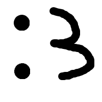

Pealkiri (title) – kõige tähtsam metaandmete osa. Igal lehel peaks olema unikaalne ja sisukas pealkiri, mis annab nii kasutajale kui otsingumootorile selge signaali, millest leht räägib.
Kirjeldus (meta name="description") – lühike kokkuvõte (umbes 150–160 tähemärki). See ei mõjuta otseselt positsiooni, kuid kuvatakse otsingutulemustes ja aitab kasutajal otsustada, kas linki avada.
Sisu – otsingumootor ei loe ainult metaandmeid, vaid ka päris teksti. Kui pealkiri ütleb “Parimad pitsad Tallinnas”, siis peab ka sisu rääkima pitsa kohvikutest, mitte hoopis millestki muust.
Semantika – õigete HTML-elementide kasutamine (h1, h2, p) annab otsingumootorile aimu, mis on põhiteema, alateema ja tavaline tekst. See muudab lehe arusaadavaks nii masinatele kui inimestele.
Lingid – sisemised ja välised lingid aitavad otsingumootoril mõista, kuidas sinu leht teistega seotud on. Lingitekst peaks olema tähenduslik (mitte “klõpsa siia”, vaid näiteks “loe rohkem pitsarestoranide kohta”).

| a | b |
| c | d |
| e | f |